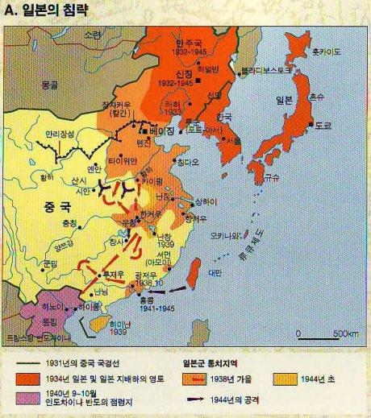

Part 1
강제동원의 역사적 배경
 1937년 7월 7일 노구교 사건을 계기로 중일 전쟁은 발발했다. 전쟁초기 기계화된 보병을 바탕으로 일제가 큰 승리를 거두었던 것과 달리, 시간이 지남에 따라 점점 전쟁은 지구전으로 바뀌어갔다. 일제의 침략으로 인해 위협을 느낀 중국의 국민당과 공산당은제 2차 국공 합작을 통해 중국 내의 병력을 통합해 본토를 일본 제국의 공격으로부터 방어하는데 집중하게 되었다. 뿐만 아니라 같은 시기의 소련군과의 충돌 등으로 인해 일제의 병력은 넓은 전선으로 분산될 수밖에 없었고, 이는 결과적으로 속전을 통해 중국을 빠르게 점령하려던 일본 제국의 계획에 차질을 빚게 만들었다.
결과적으로 전선이 장기화되자 일본 제국은 군수품과 인적자원에 대한 필요가 증가하게 되었고, 이는 식민지에 대한 더욱 가혹한 수탈로 이어졌다. 강제동원은 그 강화된 수탈 방식 중 하나였다.
강제동원의 정의
강제동원에 대한 용어 뿐만 아니라 강제동원 내부에서 각 동원 방식의 범주를 정의함에 있어서도 학자별로 다른 의견을 제시하고 있다. 2004년 3월 5일 제정되어 2004년 9월 6일 시행된 일제강점하 강제동원피해 진상규명 등에 관한 특별법과 2010년 3월 22일에 제정되어 같은 날 시행된 대일항쟁기 강제동원 피해조사 및 국외강제동원 희생자 등 지원에 관한 특별법(이하 강제동원조사법)에서는 “대일항쟁기 강제동원 피해”에 대해 “만주사변 이후 태평양전쟁에 이르는 시기에 일제에 의하여 강제동원되어 군인ㆍ군무원ㆍ노무자ㆍ위안부 등의 생활을 강요당한 자가 입은 생명ㆍ신체ㆍ재산 등의 피해”라는 정의를 사용하고 있다. 이러한 개념에 따르면 한국의 법률상에서 바라보고 있는 강제동원의 범주는 군인, 군무원, 노무자, 위안부로 구분지어 볼 수 있고 이는 일반적인 국민정서에 비추어보았을 때 크게 틀리지 않은 구분이라 할 수 있다. 다만 이에 해당하는 인력동원의 내용이 연구가 진행되며 세부화 됨에 따라 각 인력동원이 어느 범주에 해당하는지에 대한 의견이 분분하다. 특히 군무원의 경우가 가장 그 경계가 모호하다고 할 수 있다. 군무원의 하위범주에는 포로감시원, 통역관, 운전수 간호부 뿐만 아니라 일부 국영군수공장의 노동자까지 포함이 되어있는데, 학자에 따라 이를 노무자의 성격에 가까운 것으로 보는 경우도 있고 이를 병력의 성격에 가까워 병력동원으로 보는 경우도 있기 때문이다. 또 동일한 장소에서 동일한 업무를 하고 있음에도 불구하고 원호문제로 관리자의 임의에 따라 일부는 노무자 명부에, 일부는 군속 명부에 등재되는 경우도 존재하였다.